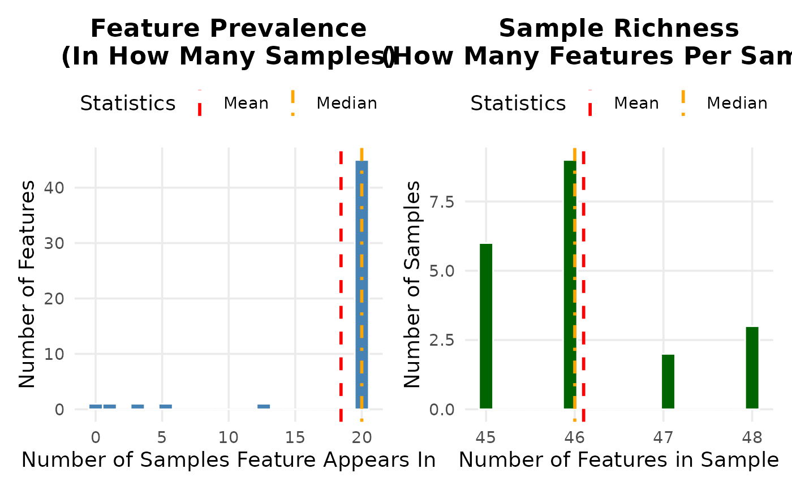
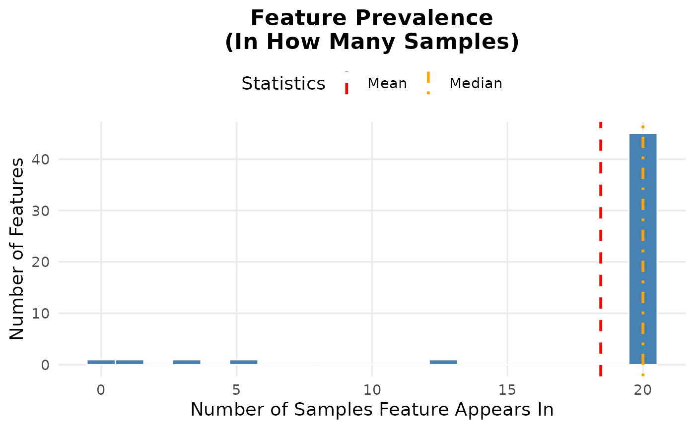
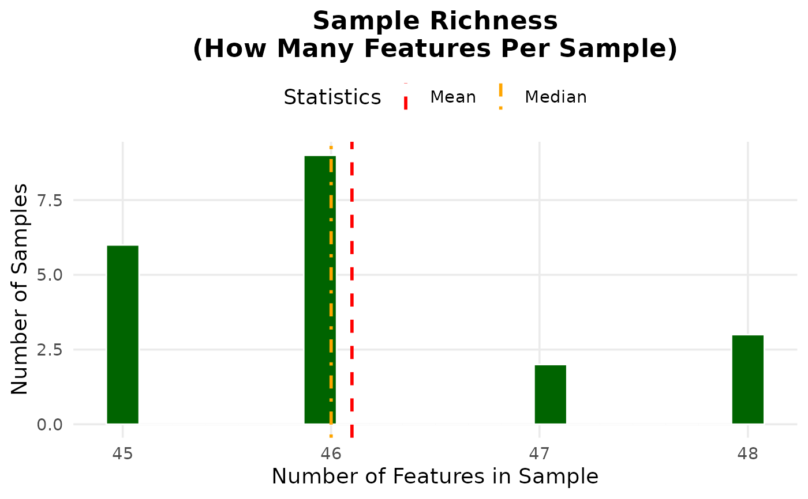

R/plot_presence_analysis.R
plot_presence_analysis.RdCreates histograms showing: - In how many samples each feature is present (feature prevalence) - How many features are present in each sample (sample richness)
plot_presence_analysis(
table,
threshold = 1,
save_dir = NULL,
prefix = "presence_analysis",
main_main = "Presence Frequency Analysis",
width = 10,
height = 6,
dpi = 300,
prev_bins = 20,
rich_bins = 20,
table_filtered = NULL,
prefix_filtered = "filtered"
)A feature table (data.frame or matrix) with features as rows and samples as columns. First column should be feature IDs, remaining columns are sample counts.
Minimum abundance for a feature to be considered "present" in a sample. Default is 1 (any non-zero count).
Optional directory to save plots. If NULL, plots are displayed only.
Prefix for saved plot filenames. Default is "presence_analysis".
Main title for the combined plot. Default is "Presence Frequency Analysis".
Plot width in inches for ggsave. Default 10.
Plot height in inches for ggsave. Default 6.
DPI for saved raster output. Default 300.
Number of bins for feature prevalence histogram. Default is 20.
Number of bins for sample richness histogram. Default is 20.
Optional filtered feature table for comparison. If provided, shows original vs filtered side by side.
Prefix for filtered plot files. Default is "filtered".
Returns a list containing:
Named vector: number of samples each feature appears in (original)
Named vector: number of features in each sample (original)
Named vector: filtered feature prevalence (if table_filtered provided)
Named vector: filtered sample richness (if table_filtered provided)
Mean number of samples per feature (original)
Mean number of features per sample (original)
List containing the ggplot objects
data(example_feature_table)
plot_presence_analysis(example_feature_table)

#> $feature_prevalence
#> ASV_001 ASV_002 ASV_003 ASV_004 ASV_005 ASV_006 ASV_007 ASV_008 ASV_009 ASV_010
#> 20 20 20 20 20 20 20 20 20 20
#> ASV_011 ASV_012 ASV_013 ASV_014 ASV_015 ASV_016 ASV_017 ASV_018 ASV_019 ASV_020
#> 20 20 20 3 20 20 20 20 20 20
#> ASV_021 ASV_022 ASV_023 ASV_024 ASV_025 ASV_026 ASV_027 ASV_028 ASV_029 ASV_030
#> 20 20 20 20 5 20 20 20 20 20
#> ASV_031 ASV_032 ASV_033 ASV_034 ASV_035 ASV_036 ASV_037 ASV_038 ASV_039 ASV_040
#> 20 20 20 20 20 20 20 13 0 1
#> ASV_041 ASV_042 ASV_043 ASV_044 ASV_045 ASV_046 ASV_047 ASV_048 ASV_049 ASV_050
#> 20 20 20 20 20 20 20 20 20 20
#>
#> $sample_richness
#> Sample_001 Sample_002 Sample_003 Sample_004 Sample_005 Sample_006 Sample_007
#> 47 46 48 45 46 48 45
#> Sample_008 Sample_009 Sample_010 Sample_011 Sample_012 Sample_013 Sample_014
#> 46 45 46 46 45 48 45
#> Sample_015 Sample_016 Sample_017 Sample_018 Sample_019 Sample_020
#> 46 46 45 47 46 46
#>
#> $mean_feature_prevalence
#> [1] 18.44
#>
#> $mean_sample_richness
#> [1] 46.1
#>
#> $min_feature_prevalence
#> [1] 0
#>
#> $max_feature_prevalence
#> [1] 20
#>
#> $min_sample_richness
#> [1] 45
#>
#> $max_sample_richness
#> [1] 48
#>
#> $n_features
#> [1] 50
#>
#> $n_samples
#> [1] 20
#>
#> $plots
#> $plots$prevalence

#>
#> $plots$richness

#>
#>